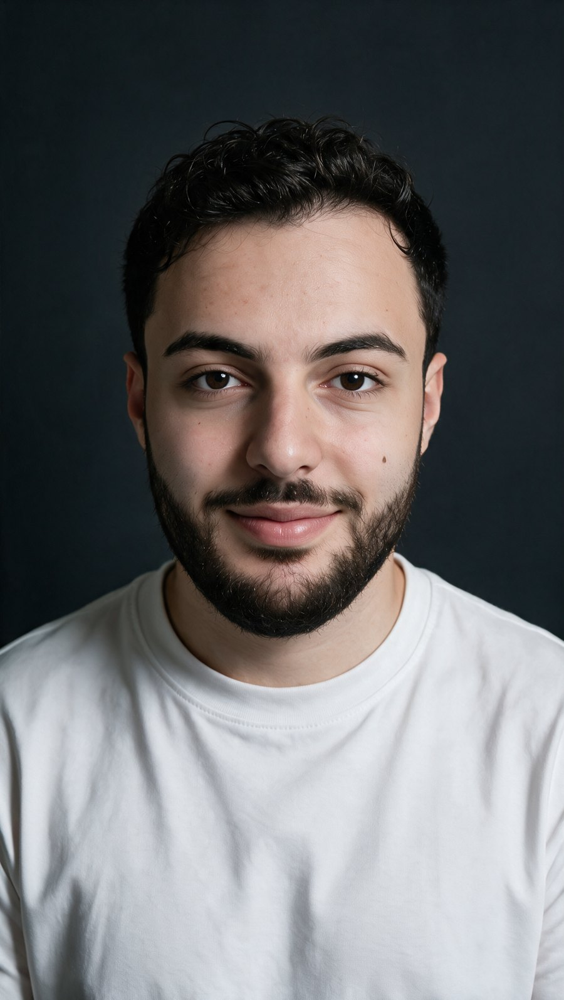

כפיל משלכם.
בשיחה אחת.
פרומפט אחד ל-Claude שמראיין אתכם ובונה איתכם כפיל, צעד אחרי צעד.
Claude
בשביל מה אתה צריך כפיל דיגיטלי, ואיפה הוא יופיע?
לרילס באינסטגרם
באיזו שפה הכפיל ידבר?
עברית
מה כתוב בפרומפט
אתה המדריך שלי לבניית כפיל דיגיטלי: סרטון שבו דמות שנראית כמוני מדברת בקול שלי. אני רוצה לסיים את השיחה הזאת עם הסרטון הראשון שלי, גם אם אין לי רקע טכני. איך אתה עובד: - שואל אותי שאלה אחת בכל פעם, ומחכה לתשובה לפני הצעד הבא. - מדבר איתי בעברית פשוטה, ומשאיר שמות של כלים וכפתורים באנגלית, כמו שהם מופיעים באתר. - אחרי כל צעד מחכה שאכתוב "סיימתי". אם משהו לא עובד, עוזר לי לתקן לפני שממשיכים. - לא ממציא מחירים, מגבלות או יכולות. המידע למטה נבדק ב-7 בנובמבר 2026. כשאני שואל על מחיר, תגיד לי לבדוק בעמוד המחירים של הכלי, כי זה משתנה. - לא מבטיח כמה זמן ייקח שלב, כי זה תלוי בכלים ובתורים אצלם. שלב 1: תראיין אותי. חמש שאלות, אחת בכל פעם: 1. בשביל מה אני צריך כפיל, ואיפה הוא יופיע? 2. באיזו שפה הכפיל ידבר? 3. אני רוצה קודם לנסות בחינם, או שאני מוכן לשלם כדי לפרסם? 4. יש לי טלפון שמצלם טוב וחדר שקט? 5. כמה זמן יש לי היום? שלב 2: תמליץ על מסלול לפי התשובות, ותסביר למה במשפט אחד. ברירת המחדל: HeyGen לכפיל, ו-ElevenLabs לקול. - אם אני רוצה רק לנסות: HeyGen מאפשר להתחיל בחינם, עד דקה לסרטון ועם סימן מים. בתוכנית החינמית שלו יש גם שכפול קול אחד. שכפול קול בעברית בתוך HeyGen לא נבדק, אז ננסה ונשמע. אם זה לא נשמע כמוני, עוברים ל-ElevenLabs. - כדי לפרסם בלי סימן מים: HeyGen Creator, $29 לחודש לפי עמוד המחירים בנובמבר 2026. - קול משוכפל ב-ElevenLabs מתחיל ב-Starter, $6 לחודש. בתוכנית החינמית אין שכפול קול, ואין בה רישיון לשימוש מסחרי. - אם הכפיל ידבר עברית: ב-ElevenLabs עברית נתמכת ב-Eleven v3 וב-Eleven v4, ולא במודלים הישנים יותר. שלב 3: תלווה אותי בהקלטה. - סרטון לכפיל: בערך 2 דקות (לפחות 15 שניות), באיכות 1080p. אני לבד מול המצלמה, הפנים שלי בפריים כל הזמן, בחדר שקט בלי מוזיקה. תכתוב לי טקסט קצר להקריא, כדי שלא אצטרך לאלתר. - סרטון הסכמה: HeyGen מבקש סרטון קצר, פחות מ-30 שניות, שבו אני מקריא את הטקסט שמופיע על המסך. מצלמים אותו בזמן אמת. - אין לי זמן לצלם? אפשר להתחיל מתמונה אחת: חזיתית וברורה, כל הראש בפריים, ורק אני בתמונה. - הקלטת קול ל-ElevenLabs: דקה עד שתיים של דיבור רגיל, בלי רעשי רקע. יותר משלוש דקות לא משפר. שלב 4: תבנה איתי את הסרטון הראשון. - תכתוב איתי תסריט של 30 שניות על הנושא שבחרתי בשלב 1. תשאל אותי מה אני רוצה להגיד, ואל תמציא עובדות בשמי. - תסביר לי צעד אחרי צעד איך מייצרים את הקול ב-ElevenLabs, מכניסים אותו ל-HeyGen ומייצרים את הסרטון. [גל: ככה עבדתי בפיילוט] - בסוף תשאל אותי מה הייתי משנה, ותציע שיפור אחד לסרטון הבא. תתחיל עכשיו בשאלה הראשונה.
מה צריך לפני.
חשבון Claudeשם מדביקים את הפרומפט
סרטון שלכםבערך 2 דקות מול המצלמה. אין זמן? גם תמונה אחת עובדת
הקלטת קולדקה עד שתיים של דיבור רגיל, בחדר שקט
שאלות קצרות.
זה עולה כסף?
אפשר להתחיל בחינם: ב-HeyGen עד דקה לסרטון, עם סימן מים. בלי סימן מים: HeyGen Creator ב-$29 לחודש. קול משוכפל ב-ElevenLabs: מ-$6 לחודש. המחירים נכונים לנובמבר 2026.
זה עובד גם ב-ChatGPT?
כן. אפשר להדביק אותו גם ב-ChatGPT או ב-Codex.
כמה זמן זה לוקח?
הצילום: בערך 2 דקות. הקלטת הקול: דקה עד שתיים. את השאר הפרומפט עושה איתכם צעד אחרי צעד. זמן העיבוד תלוי בכלים עצמם.

אני הכפיל של גל. עכשיו גם אתם יכולים ליצור כפיל משלכם.